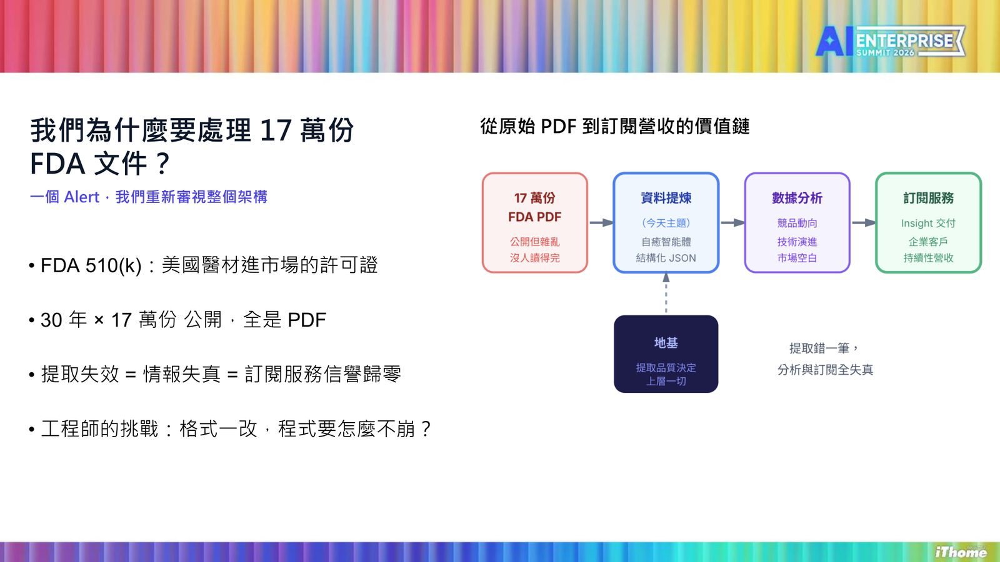
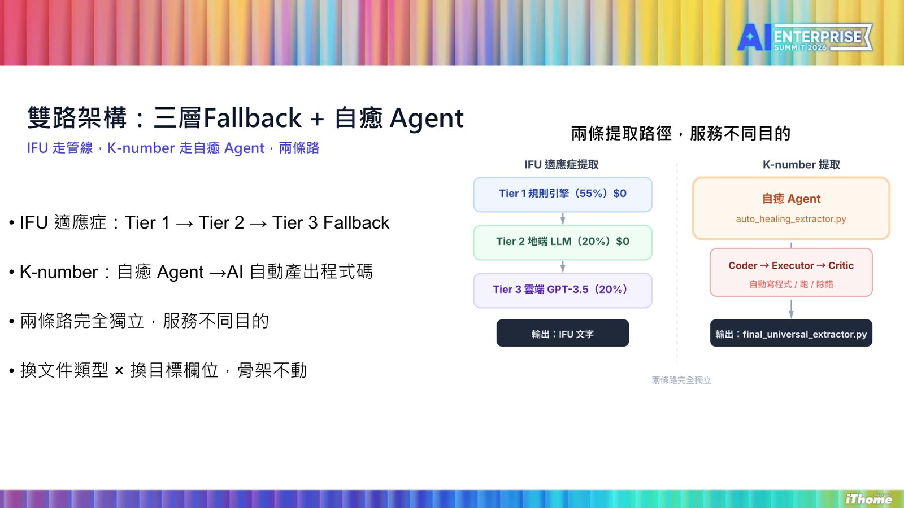
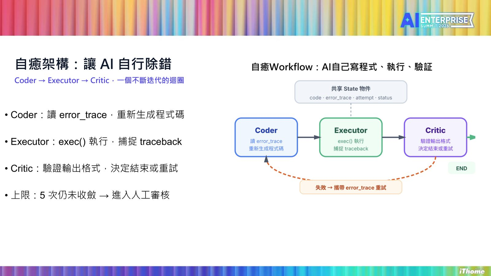
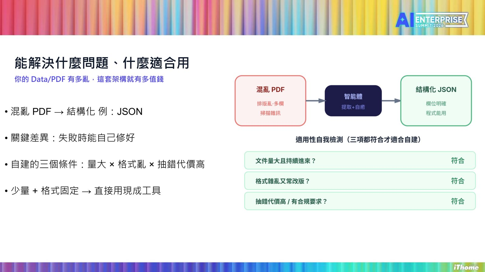

摘要
講者林志忠分享世博科技顧問團隊處理 17 萬份 FDA 510(k) 醫材許可文件時，從傳統正則表達式規則不斷「打補丁」的困境，演進到打造「自癒 Agent」讓 AI 自行產生、執行並驗證提取程式的完整歷程，最終讓 AI 直接寫程式而非直接給答案，解鎖了 4 萬多份文件的結構化處理能力。
重點整理
- 處理對象是 30 年來累積、公開的 17 萬份 FDA 510(k) 醫材許可文件，人工審閱一份要 120 分鐘，AI 提取僅需 5 秒，效率差距達 1,440 倍
- 一次真實事故：K-number 前多了一個空格，導致提取率從 95% 驟降至 23%，耗費三天工程工時修復，促成架構反思
- 提出雙路架構：IFU 適應症走 Tier 1 → Tier 2 → Tier 3 三層 Fallback 管線，K-number 則交給「自癒 Agent」讓 AI 自動產出程式碼
- 自癒架構由 Coder（重新生成程式碼）、Executor（exec() 執行並捕捉 traceback）、Critic（驗證輸出格式決定重試或結束）三節點組成，並用 LangGraph 的 State 物件在重試間共享 error_trace，最多重試 5 次未收斂則轉人工審核
- 核心觀念轉換：讓 AI「寫程式」而非「直接給答案」，程式碼作為可跑、可測、可版控的持久工程資產，已完成 4 萬多份文件的結構化提取
重點圖片／架構圖




為什麼要處理 17 萬份 FDA 文件
講者說明 FDA 510(k) 是美國醫材進入市場的許可證文件，30 年來累積公開了約 17 萬份，全部是 PDF 格式。這些文件是團隊將政府公開資料轉化為可訂閱商業情報服務的核心資料來源，若提取失效，等同於情報失真、訂閱服務信譽歸零，因此工程團隊必須面對「PDF 格式一改，程式該怎麼不崩」的長期挑戰。每份文件的三個關鍵欄位為適應症（IFU，長文非結構化）、器材描述，以及前代器材 K 碼（格式如 K123456）。
一次系統失效帶來的反思
講者分享一次代價高昂的真實事故：某次 K-number 欄位前多了一個空格，導致提取率從 95% 驟降到 23%，團隊花了三天工程工時才修復，也讓他體認到「規則永遠補不完」，傳統靠人工撰寫正則規則、逐條打補丁的方式難以長期維持。
雙路架構：三層 Fallback 與自癒 Agent
團隊因此設計出雙路提取架構：IFU 適應症走 Tier 1 → Tier 2 → Tier 3 的三層 Fallback 管線（run_rule_processor.py），而 K-number 則交由全新打造的自癒 Agent（auto_healing_extractor.py）處理，讓 AI 自動產出提取程式碼。兩條路徑服務不同目的且彼此獨立，即使換文件類型或目標欄位，整體架構骨架也不需要重寫。
自癒工作流與 LangGraph 的角色
自癒架構由 Coder、Executor、Critic 三個角色組成一個不斷迭代的迴圈：Coder 讀取 error_trace 後重新生成程式碼，Executor 用 exec() 執行並捕捉 traceback，Critic 驗證輸出格式決定結束或重試，最多重試 5 次仍未收斂就轉入人工審核。講者特別說明為何選用 LangGraph 而非單純的 while loop——因為 while loop 每次重試都會遺失上次的報錯內容，而 LangGraph 的 State 物件能讓 error_trace 在重試間共享，並透過條件路由決定 Critic 通過後結束或攜帶報錯訊息退回 Coder，讓系統在每次失敗後變得更聰明。有趣的是，最終自癒迴圈自己選擇了「幾何座標定位」而非單純正則表達式作為 K-number 的提取方式，這並非工程師預先設計的邏輯。
適用場景、風險與下一步
講者總結這套架構的核心觀念轉換是「讓 AI 寫程式，而不是讓 AI 直接給答案」，因為程式碼可跑、可測試、可重用，是持久的工程資產而非一次性回答，目前已完成 4 萬多份 FDA 文件的結構化處理。他也坦言目前的限制：AI 生成的程式透過 exec() 執行，僅開放 pdfplumber、re、pd、os 四個模組（os 仍在白名單中，需要後續加入靜態掃描），且修好 A 壞 B、Critic 誤判通過等風險仍待解決；只有在資料量大、格式混亂、且抽錯代價高的情境下，才值得投入自建這樣的自癒系統。